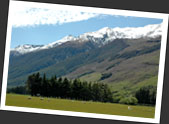
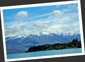
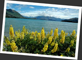

第九章
令人忘掉時間的瓦納卡 Wanaka
離開 Franz Josef，繼續往我的下一站進發．由於先前怕遇上壞天氣，所以預足了等待的時間，也將步伐把握得很準．不過自從來到南島，上天十分眷顧我，行程從未受到阻滯．我於是臨時決定停在小鎮 Wanaka 數天，好將步伐調慢過來．其實一路趕行程，真的是件勞心勞力的事情．
進入了南阿爾卑斯山地區，前往 Wanaka 路上的風景非常美麗．一路走著就覺得自己在看一幅幅油畫一樣，美麗的程度幾近完美，實在很難再去挑剔有甚麼地方不對辦了！腦海中能和"美麗風景"有關聯的影像，這兒都精巧無遺地擺在你的眼前．藍天中瓢著變幻無窮的白雲，遠處的一個個雪山在吸引著你的視線．眼前綠柔柔的草原上放牧著綿羊，牛兒，都在悠閒的吃草．冰川湖泊 Lake Wanaka 和 Lake Hawea 把天上和地下連成一線，讓一片青綠中添上了藍色調．有人說紐西蘭是南半球的瑞士，是世界上風景最優美的國家之一，我想我開始真實的體會到這些說話的意思．
被稱為第二個 Queenstwon 的 Wanaka，是個寧靜安逸的小鎮．這兒有一眾能夠在 Queenstown 找到的刺激玩意，但卻沒有 Queenstown 如此商業味濃厚．對愛好自然寧靜的人來說，這兒是個很好的避世休閒的地方．來到 Wanaka，很快我便找到寧靜舒適的小旅館 Matterhorn South Backpackers，安頓好後，便急不及待要一登市鎮中心附近的山岡 Mt. Iron．一路走到山頂之上，Wanaka 的美色便盡收眼底．前景是寧靜的湖泊 Lake Wanaka，湖的另一邊是連綿起伏的雪山群，白雲盤繞在山間慢慢移動著......一輪驚歎過後，對著眼前風景站著，默默無語，心境是異常的寧靜．
往後的幾天，天氣都很好，陽光普照，和暖怡人．我每天就只是過著懶洋洋的生活．弄弄食物，逛逛書店，四處走走，和我的同房德國人 Danny 聊聊．坐在後院的沙發上，望著藍天白雲，靈感特別好．我畫了張卡，寄給遠方的她，分享我的感覺．
一個人在湖邊漫步，走過了湖的西岸 Millennium Walkway，又去走東岸的 Eely Point Walk，一走就是四五個小時，走到再也認不得路，不知道自己身處何方．一個人在走呀走，其實並沒有甚麼目的，但在這鳥語花香的地方漫步，真的覺得好舒服呢！湖水清澈見底，湖邊長滿了長管形的美麗花兒魯冰花 (Lupin)，黃色的，白色的，粉紅色的，紫色的......草叢間有群綿羊在悠閒的吃草，幾隻小兔子不知從哪兒走出來，蹦蹦跳著．走著走著，那種把自身漸漸融進四周環境的感覺又來了！腦海常常想起很多事來，忽然之間，覺得豁然開朗，好像想通了很多道理．來到一個清靜處，坐在湖邊的大石上，呆望前面的美景．微風輕送，我覺得自己找到了生存在這世上，最需要抱住的感覺，是種像感恩的感覺，一種為存在這世上的每一天而感動的感覺......